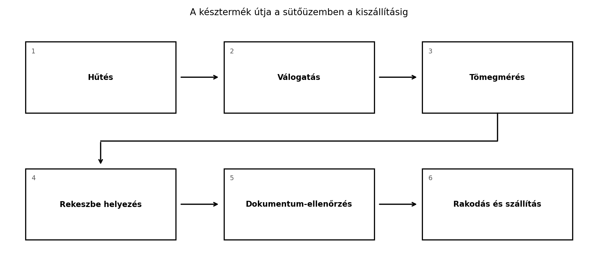

Hajnalban készül el a búzakenyér, a zsemle és a töltött fánk. A kemence ajtaja után a termék még forró, majd a hűtőpályán vagy a kelesztőkocsikon lehűl. A szállító teherautó az udvaron várakozik, a megrendelő pedig pontosan szeretné tudni, hány darabot és milyen tételt kap. Ha a rekesz koszos vagy nedves, a friss áru szennyeződhet és hamarabb penészesedhet. Ha a szállítólevélen rossz a tételszám, egy későbbi reklamációt nem lehet visszavezetni. Ha a krémmel töltött kifli melegen megy a dobozba, a szaporodásnak kedvező hőmérsékletű zónában órákat tölt, mire a fogyasztóhoz ér. Ez a fejezet éppen ezért a késztermékek biztonságos összekészítését, rekeszbe helyezését, dokumentálását és a kiszállítás előtti utolsó ellenőrzéseket tanítja.
A termék útját így lehet elképzelni: sütés után a forró kenyér és péksütemény lehűl, majd a pék válogatja, méri és tiszta rekeszbe helyezi. Az árukiadóban a szállítólevél adatait összevetik a tényleges darabszámmal és a tételazonosítóval. A rakodás előtt ellenőrzik a termék hőmérsékletét, különösen a hűtést igénylő, töltött termékeknél. A szállítás végén a vevő átvételi igazolása zárja a láncot.

A diagram azt mutatja, hogy az árukiadás nem önálló mozzanat, hanem a hűtéstől a rakodásig tartó, ellenőrzött sor. A sorban visszafelé is dolgozhatunk: ha a vevő reklamál, a tételszámból a rekeszig, a rekeszből a gyártási naplóig kell tudni visszalépni.
Definíció. A rekesz a sütőipari késztermékek szállítására, tárolására és árukiadására használt, élelmiszerrel érintkezésre alkalmas anyagból készült szállítóeszköz. Lehet műanyag, ritkábban fém; mindig tisztíthatónak, sérülésmentesnek és a termék tömegét elbíró kialakításúnak kell lennie.
Definíció. A rekeszkezelés a rekeszek higiénikus tisztítását, fertőtlenítését, szárítását, tárolását, valamint a tiszta és szennyes rekeszek elkülönített mozgatását jelenti.
Definíció. Az árukiadás a késztermékek kiszállítás előtti összekészítése, a termékek ellenőrzése, a szállítási dokumentumok kitöltése és a tételek átadása a szállítónak vagy a vevőnek.
Definíció. A szállítási dokumentum a termékek azonosíthatóságát és mennyiségét igazoló okmány, például a szállítólevél vagy fuvarlevél. A szállítási dokumentumon fel kell tüntetni legalább a termék megnevezését, darabszámát vagy tömegét, a termék tételszámát, a kiállítás dátumát és a vevő azonosító adatait.
Definíció. Az utólagos töltés olyan művelet, amikor a sütés után a termékbe – például fánkba, kiflibe, buktába – krémet, lekvárt, pudingot vagy egyéb tölteléket juttatnak.
Definíció. A bevonat a termék felületére felvitt, általában hűtés után megszilárduló réteg, például csokoládé, fondant, zselé vagy cukormáz. A szóróanyag a bevonatra vagy a tészta felületére szórt díszítő, ízesítő anyag, például mák, szezám, durva só, dió, cukor.
Definíció. A lemeztisztító a sütőlemezekre égett sütési maradékok eltávolítására szolgáló eszköz vagy gép, a zsemleszámláló pedig a darabáru pontos megszámolását segítő készülék vagy munkaeszköz.
Szabály. A rekesznek élelmiszerrel érintkezésre alkalmasnak kell lennie, és nem adhat át idegen szagot, ízt vagy anyagot a terméknek. Az élelmiszerrel érintkező anyagokra vonatkozó uniós követelményeket az 1935/2004/EK rendelet határozza meg (ellenőrizendő: a hatályos módosításokkal együtt).
Szabály. A rekeszekben csak azonos vagy egymással kompatibilis termékek helyezhetők el. Különösen fontos az allergének szerinti elkülönítés: a diós, mákos, szezámmagos termékek nem kerülhetnek olyan rekeszbe, amelyből a morzsa vagy szóródó mag az adott allergént nem tartalmazó terméket szennyezhet. A gluténmentes termékeket kizárólag külön, erre kijelölt rekeszben szabad kezelni.
Szabály. A termékeket csak megfelelően lehűlt, csomagolásra alkalmas állapotban szabad rekeszbe tenni. A meleg termék a rekeszben párásodik, a héj megpuhul, a mikrobák szaporodásának feltételei javulnak. A gyakorlatban a kenyérféléknél a 30–35 °C alatti maghőmérséklet már általában elfogadható, a töltött vagy krémes termékeknél ennél szigorúbb hűtés kell (ellenőrizendő: az üzemi HACCP-terv és az Élelmiszerkönyv termékcsoport-előírásai).
Szabály. A hűtést igénylő, utólagosan töltött vagy krémmel bevont termékeket a szállítás és a tárolás teljes ideje alatt hűtve kell tartani. Tanulási példa: a hűtést igénylő sütőipari termékeket legfeljebb 5 °C-on kell tárolni és szállítani (ellenőrizendő: hatósági útmutató és a termék jelölése szerinti tárolási hőmérséklet).
Előírás. A fogyasztók tájékoztatásáról szóló 1169/2011/EU rendelet szerint az allergén összetevőket a termék jelölésén fel kell tüntetni (ellenőrizendő: a hatályos szöveg és a magyarországi alkalmazási előírások). Az utólagos töltésnél és a szóróanyagoknál ez azért kritikus, mert a bevonat, töltelék vagy szóróanyag új allergént vihet a termékbe, amelyet a címkén már nem ismer a fogyasztó.
Higiénia. A rekeszmosás a késztermék-közeli művelet, ezért a dolgozó köteles az Személyi és üzemi higiénia alfejezetben leírt személyi higiéniát betartani: tiszta munkaruha, hajháló, ékszer nélkül, ép kézbőr, megfelelő kézmosás.
A rekeszek tisztítása lehet kézi mosás vagy gépi rekeszmosás.
Kézi rekeszmosás lépései:
Gépi rekeszmosó. A rekeszmosó berendezés szállítószalagra helyezett rekeszeket mos és öblít. A gép beállítását – vízhőmérséklet, vegyszeradagolás, szalagsebesség – a gyártói utasítás és az üzemi tisztítási terv határozza meg (ellenőrizendő: a gép adatlapja és a HACCP-terv).
Gépbiztonság. A rekeszmosó gépbe nyúlni, a védőburkolatot kinyitni, a gép belsejét tisztítani csak leállított, áramtalanított, újraindítás ellen biztosított állapotban szabad. A tilos gyakorlat a futó gép melletti kézi beavatkozás: a forgó kefék és a forró víz súlyos sérülést okozhatnak.
Előírás. A rekeszmosásnak az élelmiszer-higiéniai rendelet (852/2004/EK) szerinti jó higiéniai gyakorlat részeként biztosítania kell, hogy a tisztítás ne legyen új szennyezés forrása. A mosó- és fertőtlenítőszereknek élelmiszeripari felhasználásra alkalmasnak kell lenniük (ellenőrizendő: aktuális engedélyezési és használati előírások).
Válogatás. A hűlőpályáról érkező termékekből a péknek ki kell válogatnia a nem megfelelő darabokat. A kiválogatás szempontjai:
Figyelem. Az erősen sérült, égett vagy penészes terméket nem szabad emberi fogyasztásra átadni. A selejtet zárt, elkülönített gyűjtőbe kell helyezni, és meg kell jelölni, hogy ne kerüljön vissza az eladótérbe.
Tömegmérés. A késztermék tömegét a gyártmánylap és a technológiai lap szerinti késztömegre kell ellenőrizni. A mérés lehet minden tétel elején szúrópróbaszerű, vagy nagyobb tételnél gyakori mintavétel. A nettó tömeg meghatározásához a rekesz tömegét (tára) le kell vonni:
Ahol: - a termék tényleges tömege, - a termék és a rekesz együttes tömege, - az üres rekesz tömege.
Rekeszbe helyezés. A tiszta, száraz rekesz aljára szükség esetén élelmiszeripari papírt vagy hullámkartont lehet tenni. A termékeket úgy kell elhelyezni, hogy ne nyomódjanak össze, ne deformálódjanak, és a felső sor ne sérüljön a következő rekesz súlyától. A kenyereket fektetve vagy állítva, a zsömlét sorba rendezve szokás rakni; a pontos mód a termékcsoport technológiai lapjától függ.
Allergén. A rekeszbe helyezés során külön kell kezelni a dióval, mandulával, szezámmal vagy más, az 1169/2011/EU rendelet II. melléklete szerinti allergénnel készült termékeket (ellenőrizendő: a hatályos allergénlista). A mák nem tartozik a 14 jelölésköteles allergén közé; elkülönítése üzemi döntés (az üzemi allergénterv előírhatja), mert gyakran diós termékkel közös eszközön készülnek. Ha ugyanazt a rekeszt később az adott allergént nem tartalmazó termékhez akarjuk használni, azt csak alapos tisztítás és fertőtlenítés után szabad megtenni. A „mentes” állítású termékeknél ezt a keresztszennyeződési kockázatot a HACCP-tervben kell kezelni.
A rekeszkezelés szabályait és a válogatás szempontjait az alábbi ábra foglalja össze. A helyes oldalon tiszta, szellőzőnyílásos rekeszben (1) a kihűlt termék egy rétegben, a perem alatt fekszik (2), az allergénes termék külön, címkézett rekeszbe kerül (3). A hibás oldalon a túltöltött rekeszre helyezett rekesz benyomja a terméket (4), a gőzölgő, nem kihűlt áru a rekeszben bepárásodik (5), az allergénes és a natúr termék pedig vegyesen áll (6). Az alsó sáv a kiválogatandó selejtet mutatja.
Ellenőrzési pont a rakodás előtt: egyetlen termék sem ér a perem fölé, a rekeszben nincs pára, és az allergénes rekesz címkéje látható. A HTML-kiadásban a „Helyes”, „Hibás” és „Selejt” gomb egyenként kinagyítja a három részt.
Az árukiadás előkészítése. Az árukiadóban a pék a szállítólevél alapján ellenőrzi:
A szállítási dokumentumot csak akkor szabad aláírni, ha az adatok egyeznek a tényleges áruval. Ha eltérés van, a szállítót vagy a műszakvezetőt haladéktalanul értesíteni kell.
Példa. A szállítólevél szerint 40 rekesz búzakenyér érkezik a vevőhöz, ténylegesen azonban 39 rekesz van. A pék nem írja alá a hibás szállítólevelet: jelzi az eltérést, majd a mennyiséget szabályosan helyesbíti (áthúzás, olvasható új érték, dátum, aláírás) vagy új szállítólevelet állít ki.
Nyomonkövethetőség. A szállítólevél a nyomonkövetés kulcsdokumentuma. A Nyomonkövethetőség, problémakezelés és termékvisszahívás alfejezetben leírtak szerint a tételszámból vissza kell tudni keresni a gyártási naplót, a felhasznált liszt- és adalékanyag-tételeket, valamint a késztermék laboratóriumi eredményét. A tételszám nélküli szállítás hibás gyakorlat.
Előírás. A szállítás során a hűtést igénylő termékek hűtési láncát fenn kell tartani. A gépjármű hűtőterét a rakodás előtt a termékre előírt hőmérsékletre kell lehűteni (ellenőrizendő: a termék jelölése és a HACCP-terv). A termék hőmérsékletét csomagolásban vagy közvetlenül a termék mérésekor szúrópróbaszerűen lehet ellenőrizni.
Utólagos töltés. A tojást, tejet tartalmazó krémek, pudingok, tejszínes és vajkrémes töltelékek mikrobiológiailag érzékenyek, mert magas a víztartalmuk és a vízaktivitásuk, tápanyagban gazdagok; ezeket töltés előtt és után hűteni kell, általában 5 °C alá (ellenőrizendő: üzemi technológiai lap, HACCP-terv). A sűrű, magas cukortartalmú lekvár alacsony vízaktivitása miatt stabilabb; a lekváros termék tárolását a gyártmánylap határozza meg. A töltést tiszta nyomózsákkal, adagolóval vagy kézi töltőgéppel végezzük. A megtöltött terméket azonnal le kell hűteni, és hűtött rekeszben kell tárolni.
Bevonatok. A csokoládé, fondant, zselé vagy cukormáz felvitele előtt a termék felülete legyen száraz és megfelelő hőmérsékletű. A csokoládétemperálás azt jelenti, hogy a csokoládét előírt hőmérsékletre melegítik, majd visszahűtik, hogy a kakaóvaj stabil kristályformában szilárduljon meg. A bevonat akkor jó, ha egyenletes, vékony, nem folyik le teljesen, és nem repedezik. A bevonat készítésekor is érvényes a hűtési lánc.
Szóróanyagok felvitele. A szóróanyagokat csak a tiszta, erre kijelölt tárolóedényből szabad adagolni. Az allergén szóróanyagoknak (dió, mandula, szezám, földimogyoró) – és ha az üzemi allergénterv előírja, a máknak is – külön edényük és külön kanaluk legyen, hogy ne szennyezzenek más terméket. A felvitel után a kiszóródott anyagot azonnal fel kell takarítani.
Allergén. Az utólagos töltés, bevonat és szóróanyag allergént vihet be a termékbe, például tejet, tojást, diót vagy szezámot. Ha a termék jelölése nem tartalmazza ezt az allergént, a művelet tilos. A gyártmánylapnak és a technológiai lapnak egyértelműen rögzíteni kell, hogy melyik változat melyik allergént tartalmazza.
Lemez tisztítás és zsemleszámlálás. A sütőlemezekről a ráégett tésztamaradékot a lemeztisztító kefével, kaparóval vagy géppel kell eltávolítani, mert a visszaégett maradék füstöl, és a következő sütésnél ráéghet a termékre. A lemeztisztító gép kezelése a gépbiztonsági szabályok szerint történik: csak leállított, áramtalanított állapotban szabad kézzel beavatkozni. A zsemleszámláló a darabáru gyors és pontos megszámolására szolgál; használata csökkenti a téves darabszám miatti vitákat és az adminisztrációs hibákat.
A rekeszkezelésben, az árukiadásban és az utólagos töltésben a következő ellenőrzési pontokat kell figyelni (CCP csak a hűtött termék hőmérséklete és az allergén-elkülönítés, ha a HACCP-terv így rögzíti).
| Lépés | Veszély | Megelőzés / határ | Monitoring | Helyesbítés |
|---|---|---|---|---|
| Rekeszmosás | mikrobás szennyezés, idegen anyag | tiszta, száraz rekesz; mosószer/fertőtlenítőszer a gyártói előírás szerint | vizuális ellenőrzés, szúrópróbaszerű vegyszerkoncentráció mérés | újramosás, gépbeállítás javítása |
| Hűtött termékek tárolása, szállítása | mikrobás szaporodás | terméktípus szerinti hőmérséklet, tanulási példa: ≤ 5 °C (ellenőrizendő) | hőmérő, adatrögzítés | hűtőberendezés ellenőrzése, termék elkülönítése |
| Utólagos töltés | mikrobás szaporodás, allergén keresztszennyeződés | hűtött töltelék, tiszta eszköz, allergének elkülönítve | hőmérséklet, eszközök tisztasága, címke | töltés leállítása, selejtezés, újracsomagolás |
| Árukiadás | nyomonkövethetőség elvesztése, téves mennyiség | szállítólevélen megfelelő tételszám és darabszám | szállítólevél ellenőrzése aláírás előtt | dokumentum helyesbítése, tétel azonosítása |
| Szóróanyagok | allergén keresztszennyeződés | külön eszköz, külön tároló, feliratozott edény | szemrevételezés, allergéncímke ellenőrzés | szennyezett tétel elkülönítése, tisztítás |
Megjegyzés. A táblázatban szereplő hőmérsékletek és határértékek tanulási példák, nem hatósági előírások. A pékség HACCP-terve és a termék gyártmánylapja határozza meg a tényleges kritikus határokat (ellenőrizendő: az üzemi HACCP-terv és a NÉBIH útmutató).
Az alábbi ellenőrzőlista a késztermék-kiadás előtti teendőket foglalja össze. A sorrend fontos, mert minden lépés egy későbbi lépés feltétele.
1. példa. Rekeszek számítása
Adott: 320 darab búzakenyeret kell kiszállítani. Egy rekeszbe 8 kenyér
fér.
Keresett: hány rekesz szükséges?
Ha egy raklapon 10 rekesz fér el, akkor 4 raklapot kell megtölteni. Ha a kenyerek darabtömege 1 kg, a nettó tömeg:
2. példa. Nettó tömeg mérése
Adott: egy rekesz bruttó tömege 12,45 kg, az üres rekesz tömege 1,25
kg.
Keresett: a termék nettó tömege.
Ha a rekeszben 10 darab kenyér van, akkor egy kenyér átlagos tömege:
3. példa. Utólagos töltés
Adott: egy 100 g-os fánkba 15 g lekvárt töltenek.
Keresett: a töltött fánk tömege.
Ha a 115 g-os tömeg nem felel meg a jelölésen szereplő nettó tömegnek, akkor a gyártmánylapot és a csomagolás jelölését össze kell vetni (ellenőrizendő: a termékre előírt tömegtűrés).
Egy pékségben a szállítólevélre véletlenül az előző napi tételszámot írták. A vevőnél két nappal később reklamáció érkezett: az egyik kenyérben idegen anyagot találtak. A pékség a nyomonkövetés megkezdésekor a hibás tételszám miatt először rossz gyártási tételt kezdett el vizsgálni, így a valós hibát csak késve azonosította. A tanulság az volt, hogy a tételszámot az árukiadás előtt mindig egyeztetni kell a gyártási naplóval, és a szállítólevél aláírása előtt a tételszámot hangosan, a rekesz címkéjével együtt ellenőrizni kell.
Egy másik esetben a rekeszeket mosás után nem szárították ki teljesen, és a nedves rekeszbe helyezett kiflik héja megpuhult, a termék pedig a szállítás során összetapadt. A javítás a rekeszmosó gép szárító szakaszának beállítása volt, és a nedves rekeszek használatát kizárták a gyakorlatból.
Cél: a rekeszkezelés, az árukiadás és az utólagos töltés/bevonat higiénikus, nyomonkövethető végrehajtása.
Eszközök és anyagok: tiszta, száraz rekeszek; mérleg; szállítólevél; hőmérő; nyomózsák; töltelék; bevonóanyag; szóróanyag; fertőtlenítőszer; kéztörlő.
Higiénia. A művelet megkezdése előtt tiszta munkaruha, hajháló, ékszer nélkül. Kézmosás szappannal és meleg folyóvízzel legalább 20–30 másodpercig. A munkaterület és az eszközök tisztaságát ellenőrizni kell. Ha valaki hasmenéssel, hányással vagy gennyes sebbel dolgozna, az élelmiszerrel nem érintkezhet.
Gépbiztonság. Rekeszmosó gépnél a tisztítás csak leállított, áramtalanított, újraindítás ellen biztosított gépnél történhet. A zsemleszámlálót a gyártói utasítás szerint, védőburkolattal kell használni.
Lépések:
Ellenőrzési pontok: a rekesz száraz és tiszta; a termék tömege a tűrésen belül van; a szállítólevélen a tételszám a gyártási naplóval egyezik; a hűtött termék hőmérséklete az előírt határon belül van.
Dokumentálás: a gyártási napló, a CCP-lap és a szállítólevél kitöltése. A mért hőmérsékletet és az esetleges eltérést a naplóban fel kell jegyezni.
A rekeszkezelés és az árukiadás minőségi jellemzői:
Ha az ellenőrzés során eltérést találunk, a tételt el kell különíteni, a hibát fel kell jegyezni, és csak a hiba javítása után adható ki áru.
Hiba: a rekesz nedves vagy koszos, de a pék
mégis belerakja a kenyereket.
Következmény: a héj megpuhul, a termék hamarabb
penészesedik.
Helyes gyakorlat: a rekeszt csak száraz és tiszta
állapotban szabad használni; a nedves rekeszeket vissza kell küldeni a
mosóba.
Hiba: a meleg terméket azonnal rekeszbe zárják
és leszállítják.
Következmény: párásodás, héjlágyulás, mikrobás
szaporodás.
Helyes gyakorlat: a lehűlés előtt a terméket nyitott
vagy szellőző rekeszben tartani, és csak a megfelelő hőmérséklet elérése
után zárni le.
Hiba: a szállítólevélre a gyártási tételszámot
nem írják fel.
Következmény: a tétel nem visszakereshető,
reklamációnál a nyomonkövetés késik.
Helyes gyakorlat: a tételszám kitöltése kötelező, és az
árukiadás előtt ellenőrizni kell.
Hiba: a diós vagy szezámos terméket ugyanolyan
rekeszben, ugyanazon eszközökkel kezelik, mint az adott allergént nem
tartalmazót.
Következmény: allergén keresztszennyeződés, a „mentes”
állítás hamis.
Helyes gyakorlat: külön eszköz, külön rekesz, jelölt
tároló.
Hiba: a hűtött töltelékes terméket a szállítás
előtt szobahőmérsékleten hagyják órákig.
Következmény: a töltelékben mikrobák
szaporodhatnak.
Helyes gyakorlat: a hűtési lánc fenntartása, a
hőmérséklet ellenőrzése és dokumentálása.
1. feladat (A)
Egy rekesz bruttó tömege 13,80 kg, az üres rekesz tömege 1,60 kg. Hány
kg a termék nettó tömege?
2. feladat (A)
Egy pékség 150 darab kiflit szállít ki. Egy rekeszbe 25 darab fér. Hány
rekesz szükséges?
3. feladat (B)
Egy szállítólevélen a következő adatok szerepelnek: termék: vizes
zsemle, darabszám: 600, tételszám: 2024-07-12-03. A raktárban a gyártási
napló szerint a 2024-07-12-03 tétel 580 darab vizes zsemle. Mit kell
tennie a pékség dolgozójának?
4. feladat (B)
Egy 100 g-os fánkba 18 g pudingot töltenek. A termék jelölésén a nettó
tömeg 115 g. A mért átlagos tömeg 119 g. Mi lehet az ok, és mit kell
tenni?
5. feladat (C)
Az árukiadásnál a hűtött krémes párna hőmérséklete 8 °C, a HACCP-terv
szerint legfeljebb 5 °C lehet. Mit kell tenni a tétellel? Milyen
helyesbítő intézkedések jöhetnek szóba?
6. feladat (D)
Egy pékségben az utólagos töltéshez használt nyomózsákot csak öblítik,
és a diós töltelék után azonnal mákos tölteléket tesznek bele. Milyen
veszélyek merülnek fel, és hogyan kell eljárni?
1. feladat.
A termék nettó tömege 12,20 kg.
2. feladat.
Hat rekesz szükséges.
3. feladat.
A szállítólevél 600 darabot ír, de a gyártási napló szerint a tétel 580
darab. A dolgozó nem írhat alá a hibás dokumentumot. A tételszámot a
gyártási naplóval egyeztetni kell, meg kell nézni, hogy a maradék 20
darab másik tételből származik-e, és a szállítólevelet a tényleges
mennyiségre kell javítani, vagy új tételszámú dokumentumot kell
kiállítani.
4. feladat.
A gyártmánylap szerinti tömeg 100 g + 18 g = 118 g, a jelölés 115 g – a
gyártmánylap és a címke nincs összhangban (a mért 119 g az 1 g mérési
szórásból és a 3 g eltérésből adódik). A 119 g-os átlag a névleges 115 g
fölött van: ez jogilag nem hiány (előrecsomagolt terméknél a hiány
korlátozott, ellenőrizendő: hazai előrecsomagolási rendelet), de
anyagveszteség. Teendő: a gyártmánylapot és a címkét egyeztetni (például
15 g töltelék vagy 118 g jelölés), a töltőgép adagolását beállítani és
mintavétellel ellenőrizni.
5. feladat.
A hűtött termék 8 °C-ra melegedett, ami a HACCP-terv szerint eltérés. A
tételt azonnal el kell különíteni és vissza kell tartani. Meg kell
állapítani, mennyi ideig volt 5 °C fölött; a HACCP-terv határán túl a
terméket selejtezni kell, a terv által megengedett rövid túllépésnél
visszahűthető (ellenőrizendő: HACCP-terv). A hűtőberendezést és a
rakodás körülményeit ki kell vizsgálni; a döntést és a mért értéket a
CCP-lapon dokumentálni kell.
6. feladat.
A nyomózsák csak öblítése nem elég; a dió allergén maradt benne, és a
mákos töltelékű termék is dióval szennyeződhet. A dió súlyos allergén, a
keresztszennyeződés fogyasztót veszélyeztethet. A helyes eljárás: a
nyomózsákot alapos mosással és fertőtlenítéssel kell tisztítani, vagy
külön zsákot kell használni az egyes allergén töltelékekhez. A
töltőedényeket fel kell címkézni, és a HACCP-tervben rögzíteni kell az
allergénváltás szabályait.
A rekeszkezelés, az árukiadás és az utólagos töltés, bevonás a sütőipari gyártás utolsó, ugyanakkor élelmiszer-biztonsági szempontból kiemelt szakasza. A rekeszek csak tisztán, szárazon, sérülésmentesen használhatók; a mosást a jó higiéniai gyakorlat szerint, ellenőrzött vegyszer- és hőmérsékleti paraméterekkel kell végezni. A termékeket lehűlt állapotban, válogatva, tömegmérés után kell rekeszbe helyezni, allergén szempontból elkülönítve. A szállítási dokumentumok pontos kitöltése és aláírás előtti ellenőrzése a nyomonkövethetőség alapja; a tételszám hiánya vagy tévesztése visszahívásnál súlyos hibát okoz. A hűtött, töltött vagy bevont termékek hűtési láncát fenn kell tartani. Az utólagos töltés, bevonat és szóróanyag felvitele során az allergén keresztszennyeződés megelőzése elsődleges. Továbbvitt eredmény: az itt megismert tömegellenőrzési, válogatási, árukiadási és allergénkezelési szabályokat az A kenyerek jellemzése, csoportosítása, anyagnormái és minőségi követelményei alfejezetben a kenyérfélék minőségi követelményeinek értelmezésekor, a Mérési eredmények dokumentálása és minőségi eltérések kezelése alfejezetben pedig a minőségi eltérések dokumentálásakor használjuk fel.
A szöveg hivatkozik az alábbiakra:
A példákban szereplő hőmérsékletek, tömegek, vegyszer- és gépbeállítások tanulási példák; konkrét üzemi alkalmazás előtt a pékség technológiai lapját, gyártói adatlapjait és HACCP-tervét ellenőrizni kell.